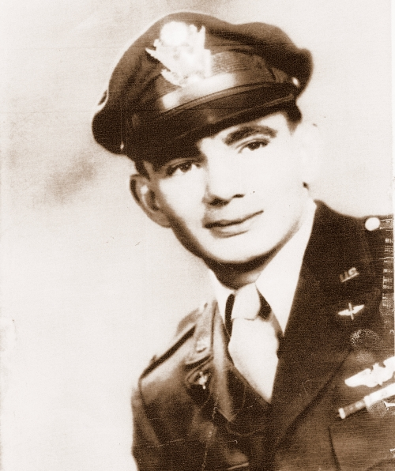
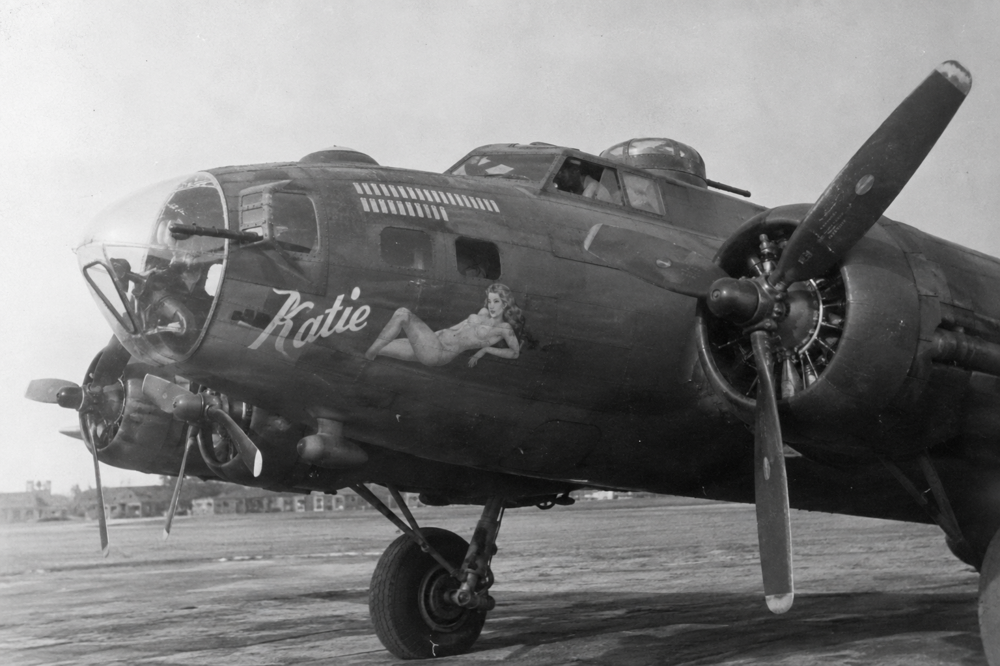

From Louisiana to Thorpe Abbotts, Berlin, a burning B-17 over Liege, and Stalag Luft III: the documented wartime story of 2nd Lt. Murray Joseph Lirette, bombardier of the 100th Bomb Group.
ARCHIVAL PORTRAIT Lt. Murray J. Lirette
Wartime portrait preserved by the 100th Bomb Group Foundation.

Photo: 100th Bomb Group Foundation, courtesy of Murray Lirette.
Murray Joseph Lirette
O-767531
Houma, Louisiana
2nd Lieutenant / Bombardier
351st Bomb Squadron, 100th Bomb Group (Heavy)
AAF Station 139, Thorpe Abbotts, England
B-17G 42-39983 “Katie” / EP-F
POW after 11 May 1944; liberated in 1945
B-17G FLYING FORTRESS
42-39983 “KATIE”351st Bomb Squadron · 100th Bomb Group · code EP-F Lost to flak over the Liege marshalling yards, 11 May 1944
Research compiled September 2026. The report prioritizes 100th Bomb Group Foundation records and MACR material, then uses archival, military, university and contemporary sources for context. Conflicts and unresolved details are explicitly labeled.
Portable asset convention: keep this HTML file next to an assets/images/ folder. Core Lirette photographs are referenced with relative paths; NASA/Martin Marietta source links are retained in captions so you can download and self-host those images for the final site.
Part I · From Louisiana to England
A young bombardier arrives at the Bloody Hundredth
Murray Joseph Lirette came to the 100th Bomb Group from Houma, Louisiana, as a newly trained officer in one of the most dangerous jobs in the Eighth Air Force: bombardier in a B-17 Flying Fortress. The record that survives is unusually concentrated. His crew joined the group on 4 May 1944; one week later, their aircraft was destroyed over Belgium and Lirette was a prisoner of war.1
The 100th Bomb Group was based at Thorpe Abbotts in Norfolk, England, and flew B-17s with the Eighth Air Force. Its reputation - later immortalized as the “Bloody Hundredth” - came from spectacular clusters of losses in 1943, even though historians caution that its overall loss rate was not uniquely worse than every other heavy-bomber group.6,14 By spring 1944, the group was flying at a punishing tempo against German cities, aircraft factories, rail targets and V-weapon sites.
DocumentedStateside training at Pyote, Texas. The 100th Bomb Group Foundation preserves a crew photograph supplied by Lirette. Its caption states that his original pilot and copilot were reassigned to B-29 training; Lirette then left that crew and became bombardier for 2nd Lt. Jack Hunter shortly before departure for England.1
The Hunter crew
The Hunter crew was assigned to the 351st Bomb Squadron. The normal crew included pilot Jack Hunter, copilot George Shoesmith, navigator Richard Heh, bombardier Murray Lirette, radio operator Spiro Lecouras, engineer/top-turret gunner Arthur Wellingham, ball-turret gunner Ernest Medhurst, waist gunners Samuel Martiello and Robert Kuehl, and tail gunner Herbert South.1 Their operational B-17 was 42-39983, Katie.
4 May 1944crew joined 100th BG
351stBomb Squadron
42-39983B-17G “Katie”
EP-Faircraft code
What a bombardier did
Lirette’s combat station was in the glass nose of the B-17, beside the navigator and ahead of the pilots. On the bomb run, the bombardier worked the bombsight and coordinated the final release. That role put him at the forward end of the aircraft, exposed to flak and frontal attack, and demanded precision at the moment the formation was least free to maneuver. A later profile of Lirette described the job in terms he carried into civilian life: patience, focus and discipline.11
Part II · Combat record
Berlin, La Glacerie, Liege - one week of combat
The surviving 100th Bomb Group database compresses Lirette’s operational flying into three calendar dates: 7, 8 and 11 May 1944. May 8 is the tricky one. The group mission ledger records two separate missions that day - Berlin (Mission 112) and a No-Ball target at La Glacerie (Mission 113) - while the Hunter crew page contains two duplicate-looking entries labeled “112 / Berlin & LaGlacerie.” The duplicate likely reflects both sorties, but the underlying crew record does not cleanly assign the second row to Mission 113.1,4
ProbableFour sorties in five days. The best reading of the records is Berlin on May 7; Berlin and La Glacerie on May 8; and Liege on May 11. Because the May 8 crew database is internally inconsistent, this report labels four sorties as probable rather than claiming an unqualified personal mission total.
Berlin - Mission 111
7 May 1944
Aircraft42-39983 “Katie”
TargetBerlin, Germany
Group effort36 aircraft dispatched
The Hunter crew is listed on Katie for the 100th’s May 7 Berlin mission.1 The group operations diary says 36 aircraft were dispatched and bombing was conducted by Pathfinder methods through cloud. The danger was real even when a crew came home: another 100th aircraft returned with its navigator dead and bombardier wounded.5
Berlin and La Glacerie
8 May 1944
Mission 112Berlin - morning
Mission 113La Glacerie - afternoon
Hunter recordtwo May 8 rows
The official group mission ledger separates the day into a morning Berlin mission and an afternoon strike on a “No-Ball” target - the Allied term for V-weapon installations - at La Glacerie.4,5 The Hunter crew record appears twice for May 8 but combines both targets under Mission 112. A crew note adds a crucial clue: waist gunner Samuel Martiello was wounded on the La Glacerie operation, which establishes the crew’s connection to the afternoon target.1
Liege marshalling yards - Mission 115
11 May 1944
Aircraft42-39983 “Katie”
TargetLiege M/Y, Belgium
Outcomeaircraft lost to flak
The May 11 operation was a short-notice mission against the rail marshalling yards at Liege. The group was alerted at 10:30, briefed at 12:30, and returned around 20:00. The Bowman diary records one aircraft lost over the target after a direct hit tore away a wing - the Hunter crew’s Katie.5
Part III · 11 May 1944
The destruction of Katie
A few seconds after the bombs left the aircraft, flak struck B-17G 42-39983. The surviving records agree on the essentials: the hit destroyed a section of wing, fuel fires became uncontrollable, the bomber entered a spin, and it exploded near the Liege rail yards. Of the ten men aboard, only three survived.2,3
What the MACR says. Missing Air Crew Report 04866 identifies the aircraft as B-17G 42-39983, operating from AAF Station 139 with the 351st Bomb Squadron. The intended destination was the Liege marshalling yards; the loss was attributed to enemy antiaircraft fire. The aircraft was last reported at 19:31 on 11 May 1944.2
The Foundation’s casualty summary places the major wreckage near Ougree, just southwest of central Liege, and records that seven men were killed. Four of those dead initially could not be identified and were buried as unknowns before U.S. Graves Registration later established their identities.3
“The plane started spinning … the gas tanks exploded and blew the bombardier and myself out.” - navigator Richard Heh, post-loss statement preserved with the crew record1
Heh’s statement is the clearest surviving description of how Lirette escaped. Heh said the hit set the aircraft on fire and the spin pinned him in place; the explosion then ejected both navigator and bombardier. Heh did not regain consciousness until he had fallen a great distance through the air. Tail gunner Herbert South also survived, despite a compound leg fracture.1
The crew aboard on the final mission
Position
Name
Outcome
Note
Pilot
2nd Lt. Jack Hunter
KIA
Crew commander
Copilot
2nd Lt. George W. Shoesmith
KIA
Navigator
2nd Lt. Richard J. Heh
POW
Blown from aircraft
Bombardier
2nd Lt. Murray J. Lirette
POW
Blown from aircraft; injured
Radio operator
T/Sgt. Spiro Lecouras
KIA
Engineer / top turret
T/Sgt. Arthur L. Wellingham
KIA
Ball turret
S/Sgt. Charles L. Anglin
KIA
Substituting for Ernest Medhurst
Left waist
S/Sgt. Robert H. Kuehl
KIA
Right waist
S/Sgt. John Rupnick
KIA
Substituting for Samuel Martiello
Tail gunner
S/Sgt. Herbert S. South
POW
Survived with compound leg fracture
10men aboard
7killed in action
3survived / POW
04866MACR
Part IV · Prisoner of war
Hospital, Stalag Luft III, and the winter march
The explosion saved Lirette from the burning B-17, but not from injury or capture. The 100th’s records say he was captured at Seraing and hospitalized in Brussels. German reporting preserved with the crew record notes his commitment to a hospital on 13 May 1944.1,3
Seraingcaptured
Brusselshospital
Stalag Luft IIISagan
NurembergLangwasser
Liberation1945
A National Archives-derived POW index identifies Lirette as an Air Corps prisoner held at Stalag Luft III at Sagan and later moved to Nuremberg-Langwasser. His final status is recorded as returned to military control - liberated or repatriated.7
Stalag Luft III
Stalag Luft III was a Luftwaffe-run camp for captured Allied air officers in Silesia, best known for the “Great Escape.” Lirette arrived after that March 1944 escape attempt. In January 1945, with Soviet forces approaching, the Germans evacuated thousands of prisoners westward in severe winter weather. Independent histories date the mass evacuation to the night of 27-28 January 1945.15
Documented in 2026 account WBRZ reported that Lirette survived the forced winter march as the Soviet Army advanced, was later hospitalized again because of the injuries from the B-17 loss, and was ultimately liberated by troops under Gen. George S. Patton in 1945.9
The available public sources do not yet establish every camp transfer, hospital date, or the exact unit that physically reached him at liberation. Those details would require his Individual Deceased Personnel/POW files, liberation questionnaire, service record, or family-held papers. The broad sequence - capture, hospital, Stalag Luft III, evacuation west, Nuremberg, liberation - is well supported.
Part V · Home again and into the space age
Engineer, husband, father — and a career at Martin Marietta’s Michoud operation
Lirette’s story did not end with repatriation. He returned to Louisiana, earned an electrical-engineering degree, raised a family, and built a long aerospace career. The strongest surviving employment evidence places him with Martin Marietta Aerospace at the NASA-owned Michoud Assembly Facility near New Orleans — not, on the evidence currently available, as a NASA civil-service employee.
1948
Louisiana State University lists Murray Joseph Lirette as a 1948 bachelor’s graduate in Electrical Engineering.10
26 November 1948
He married Beverly Belanger in Houma. They later made Slidell their home and raised four daughters.13
Postwar career
A later profile describes a long career in aerospace engineering in which his work helped build rockets.11
1984
An internal Martin Marietta newspaper identified Murray J. Lirette, Michoud production operations, as a recipient of a new-technology cash award for a “Safing System for Robots and Repetitive Motion Machines,” submitted as a result of work on NASA contracts.12
19 May 1984
Martin Marietta’s Annual Awards Night again listed Murray J. Lirette among the company’s New Technology honorees.18
May 2025
At age 101, he attended the 100th Bomb Group reunion at the National WWII Museum in New Orleans, one of three WWII veterans present. The Air Force identified him as a former 351st Bomb Squadron bombardier and POW.8
May 2026
At age 102, he received Belgium’s Order of Leopold at the rank of Knight in Baton Rouge in recognition of his wartime service over Belgium.9
Martin Marietta and NASA’s “rocket factory”
NASA acquired the Michoud site in 1961 for the design and assembly of large space vehicles. Saturn stages were built there during the Apollo era; in the 1970s the facility transitioned to the Space Shuttle program. In August 1973 NASA selected Martin Marietta to design, build, test and deliver the Shuttle’s External Tank. Martin Marietta rolled the first External Tank out of Michoud on 9 September 1977, and the first flight tank was delivered to Kennedy Space Center in 1979.16,17
NASA describes the External Tank as the structural backbone of the Shuttle stack and the reservoir that supplied liquid oxygen and liquid hydrogen to the orbiter’s main engines. NASA historical material specifically states that the tanks were manufactured at Michoud by the Martin Marietta Corporation under Marshall Space Flight Center management.19
This context matters because the surviving Martin Marietta record does more than say that Lirette “worked in aerospace.” It places him inside Michoud production operations during the Shuttle era and ties one of his engineering ideas directly to work performed on NASA contracts.12
Michoud, 9 September 1977. The first Space Shuttle External Tank rolls out of the Michoud Assembly Facility. NASA had selected Martin Marietta to design and build the tank. Credit: NASA. Source.
A documented engineering contribution
The clearest primary evidence of Lirette’s postwar technical work is the 30 March 1984 issue of Martin Marietta News. The company’s Denver Aerospace New Technology Evaluation Committee announced cash awards for technology disclosures arising from NASA-contract work. Among the recipients was:
“Murray J. Lirette, Michoud production operations: ‘Safing System for Robots and Repetitive Motion Machines.’”12
The surviving item does not describe the design in enough detail to reconstruct its circuitry or operating logic. The safest interpretation is therefore a narrow one: Lirette developed or disclosed a safety-related system for industrial robots or repetitive-motion machinery, the work arose from a NASA contract, and Martin Marietta considered it sufficiently novel to merit a New Technology award.
Archival exhibit · Martin Marietta News, 30 March 1984
The article “New technology awards go to 8” names Murray J. Lirette, identifies him with Michoud production operations, and gives the title of his safing-system disclosure.
Recommended website asset: download the PDF, crop the award item on page 2, and save it as assets/images/martin-marietta-1984-lirette-award.png.
The Space Shuttle connection — what the record proves
Documented Lirette worked in Martin Marietta’s Michoud production operations and received a 1984 new-technology award for work submitted as a result of NASA contracts.12 At that time Martin Marietta’s principal NASA manufacturing program at Michoud was the Space Shuttle External Tank.16,19
Do not overstate The records found so far do not prove that Lirette was a NASA civil-service employee, nor do they identify a particular External Tank, Shuttle mission, subsystem, or production station on which he personally worked. The historically precise wording is that he worked for Martin Marietta at NASA’s Michoud facility during the Shuttle era and made a documented NASA-contract technology contribution.
From a B-17 to the American space program
There is an extraordinary arc to Lirette’s life. In 1944 he crossed Europe in the nose of a B-17, survived the destruction of Katie, and spent the remainder of the European war as a prisoner. After returning home he chose engineering as his profession. Four decades after the loss of his bomber, his name appeared in a major aerospace company’s technical publication for an engineering contribution associated with NASA-contract production work.
It is difficult to imagine a sharper illustration of the technological distance traveled by one generation: from wartime heavy bombers to the industrial systems that supported reusable spacecraft.
Belgian Order of Leopold — Knight
Presented in 2026 by Belgian diplomatic/consular representatives in Louisiana. This is a postwar Belgian honor, not a wartime USAAF decoration.
Martin Marietta New Technology recognition
Documented in 1984 company publications for Lirette’s “Safing System for Robots and Repetitive Motion Machines,” arising from NASA-contract work at Michoud.
Part VI · Evidence check
What is certain - and what still needs an original record
Facts are separated from plausible reconstruction, and database inconsistencies are called out rather than silently harmonized. The aim is to preserve a clear distinction between what the surviving record proves and what can only be inferred from it.
Documented Service number O-767531
The 100th personnel page and MACR both give O-767531. A casualty-summary page prints O-757531, almost certainly a transcription error.
Documented MACR 04866
The dedicated MACR record identifies report 04866. One separate “Aircraft Lost” index on the same site lists 4868 for Hunter, an internal database inconsistency; the MACR itself governs here.
Conflict Which wing was struck?
The casualty summary calls it the right wing; the eyewitness text says a wing near No. 1 engine. Because standard B-17 engine numbering makes those descriptions awkward to reconcile, this report says simply that a wing section was destroyed by flak.
Probable Four combat sorties
The Hunter page has May 7, two May 8 rows, and May 11. The separate group ledger confirms two missions on May 8. The second Hunter row is not cleanly labeled Mission 113, so “four” remains a strong inference, not an unqualified total.
Not yet found Complete training record
Pyote training is documented photographically, but the exact bombardier school, commissioning date, enlistment date and training sequence are not established by the sources reviewed.
Not yet found Complete POW file
Camp sequence is supported, but exact dates inside Stalag Luft III, Nuremberg, hospitals and liberation would benefit from NARA POW records, his separation papers or a wartime log.
Documented Martin Marietta at Michoud
The March 1984 company newspaper explicitly identifies “Murray J. Lirette, Michoud production operations” and states that the award arose from work on NASA contracts.
Not yet found Full aerospace employment timeline
No record located so far establishes Lirette’s exact Martin Marietta hire date, retirement date, earlier job titles, or every NASA program he supported. Avoid filling those gaps by inference.
Important distinction NASA contractor, not proven NASA employee
Michoud was NASA-owned, but the evidence currently places Lirette with Martin Marietta. The report therefore does not describe him as a NASA civil servant.
Best next archival targets: the full Missing Air Crew Report 4866 images; Lirette’s Official Military Personnel File (OMPF) or reconstructed service record; POW liberation questionnaire / casualty correspondence; 351st Bomb Squadron operations records for 7-11 May 1944; Martin Marietta Michoud employee newsletters, service-anniversary lists and retirement records; and any family-held letters, orders, logbooks, award certificates or photographs.
Photo record
Images directly connected to Lirette
The core Lirette images in this portable version use relative asset paths so they can be moved with the HTML file. Source and credit information should remain attached to every image when the report is published.
WARTIME PORTRAIT Lt. Murray J. Lirette 100th Bomb Group Foundation
Lt. Murray J. Lirette
Wartime portrait preserved by the 100th Bomb Group Foundation; credited there as courtesy of Murray Lirette.
B-17G 42-39983 “KATIE” Nose art and mission markings 351st Bomb Squadron, 100th Bomb Group

B-17G 42-39983 Katie
Archival photograph of Lirette’s aircraft showing the nose art and mission markings. This was the B-17G flown by Jack Hunter’s crew and lost to flak over the Liege marshalling yards on 11 May 1944.
Photo source: Imperial War Museums / American Air Museum archive.
Aircraft photograph: The Imperial War Museums’ American Air Museum archive includes an identified photograph of B-17G 42-39983 Katie with her nose art; see the record here: American Air Museum - 42-39983.
Source notes
Where this account comes from
100th Bomb Group Foundation - Murray J. Lirette personnel record. Core source for unit, role, service number, POW status, crew composition, aircraft, crew arrival date, mission entries, Pyote photograph, final-mission narrative, Heh statement and German hospital note. 100thBG record.
100th Bomb Group Foundation - Missing Air Crew Report 04866. Identifies Jack Hunter crew, AAF Station 139, 351st BS, B-17G 42-39983, Liege M/Y, last sighting time and enemy antiaircraft fire as cause of loss. MACR 04866.
100th Bomb Group Foundation - Casualty Report, 11 May 1944. Crash near Ougree, capture at Seraing, Brussels hospitalization, KIA/POW outcomes, substitute gunners and initial burials. Casualty report.
100th Bomb Group Foundation - Mission database. Separates 7 May Berlin (111), 8 May Berlin (112), 8 May La Glacerie No-Ball (113), 9 May Laon (114) and 11 May Liege (115). Mission list.
Bowman Diary - 100th Bomb Group Operations. Contemporary-style group chronology for the May 7 Berlin mission, two May 8 operations, and May 11 Liege strike, including the report of one aircraft losing a wing to a direct hit. Bowman Diary.
100th Bomb Group Foundation - Abbreviated History. Unit history, Thorpe Abbotts, B-17 operations and the group’s combat background. Abbreviated History.
Sons of Liberty Museum - Murray Lirette POW record. Secondary presentation of U.S. National Archives POW data: Stalag Luft III, movement to Nuremberg-Langwasser, and return to military control. POW record.
U.S. Air Force / DVIDS - 100th Bomb Group reunion, May 2025. Identifies Lirette, age 101, as a 351st BS bombardier and one of three WWII veterans attending the New Orleans reunion; includes official photographs. DVIDS article.
WBRZ - 16 May 2026. Contemporary report on Lirette receiving Belgium’s Order of Leopold at age 102; also recounts injury, Stalag Luft III, forced winter march, hospitalization and liberation by Patton’s forces. WBRZ report.
Louisiana State University College of Engineering alumni list. Lists Murray Joseph Lirette, 1948, Bachelor, Electrical Engineering. LSU alumni PDF.
Peoples Health Connection, Winter 2021. Profile of Lirette at age 96: decorated WWII veteran, B-17 shot down over Belgium, lingering injuries, aerospace engineering/rocket career and golf. Magazine PDF.
Martin Marietta News, June 1984. Names Murray J. Lirette of Michoud production operations as a NASA-contract new-technology award recipient for a robot/repetitive-motion-machine safing system. Martin Marietta News PDF.
Beverly Belanger Lirette obituary, 2020. Marriage date, Slidell residence and four daughters; identifies her husband as Murray Joseph Lirette. Legacy obituary.
The National WWII Museum - “The Bloody 100th Bomb Group.” Historical context for the group’s nickname, losses, Thorpe Abbotts and place within the Eighth Air Force. Museum article.
DVIDS - Stalag Luft III evacuation context. Historical description of the January 1945 evacuation and forced marches as the Soviet Army approached. DVIDS history.
NASA — “50 Years Ago: NASA Selects Contractor for Space Shuttle External Tank.” NASA selected Martin Marietta in August 1973 to design, build, test and deliver the Shuttle External Tank; includes the 1977 Michoud rollout photograph. Source
NASA — Michoud history. NASA acquired Michoud in 1961; the site built Saturn stages and later Space Shuttle External Tanks. Source
Martin Marietta News — 1984 Annual Awards Night. Lists Murray J. Lirette among New Technology honorees at the company’s May 19, 1984 awards banquet. Source
NASA Marshall — 65 years of ingenuity and teamwork. States that Space Shuttle External Tanks were manufactured at Michoud by Martin Marietta under Marshall Space Flight Center management. Source
Editorial note: spelling and numbering are normalized where a primary-looking record clearly controls an inconsistent secondary database field. In particular, this report uses service number O-767531 and MACR 04866. It does not silently resolve the May 8 sortie count or the wing-side discrepancy in the crash accounts.